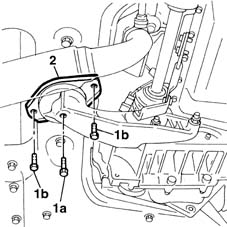
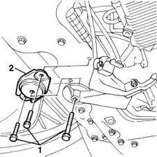

1008B20 power unit intermediate mount flexible block - replace
- Path
- Procedures > 10 ENGINE UNIT > 1008 POWER UNIT SUPPORTS > 1008B power unit mounting blocks > 1008B20 power unit intermediate mount flexible block - replace
- Kind
- repair procedure (removal / refitting; the operation number is the code)
- Applies to
- all engines; all production periods
- Interactive page
- https://sloeber94.github.io/elrnDB-fMltpl/en/#/2891188
Applies to: engines: 1.6 16v; all production periods
 Removing
Removing
 Refitting
RefittingPlace the car on a ramp.
Position a column jack beneath the engine to support it safely.
1. Unscrew retaining bolt (1a) and withdraw. Unscrew retaining bolts (1b).
Lower the column jack slightly so that the flexible block comes out more easily.
2. Remove the flexible block from the engine.

Applies to: engines: 1.6 16v; all production periods
Refitting
RemovingFit the flexible block and tighten the bolts securing it to the body to torque.
 | Fastening | Component | Ø | Value (daNm) |
|---|---|---|---|---|
- | Bolt | INTERM RUBBER MOUNT | M8 | 3.5 |
Tighten the central bolt securing the block to the rigid mount to torque.
| Fastening | Component | Ø | Value (daNm) |
|---|---|---|---|---|
- | Bolt | INTERM RUBBER MOUNT | M12 x 1.25 | 8 |
Remove the column jack.
Remove the vehicle from the ramp.
Applies to: engines: 1.9 JTD 8V; all production periods
Removing
Refitting1076B50 exhaust pipe attachment to engine - r + r
1. Unscrew the flexible block retaining bolts.
2. Remove the flexible block

Applies to: engines: 1.9 JTD 8V; all production periods
Refitting
RemovingFit the flexible block and secure by tightening the bolts to the specified torque.
| Fastening | Component | Ø | Value (daNm) |
|---|---|---|---|---|
- | Bolt | INTERM RUBBER MOUNT | M8 | 3.5 |
| Fastening | Component | Ø | Value (daNm) |
|---|---|---|---|---|
- | Bolt | INTERM RUBBER MOUNT | M12 x 1.25 | 8 |
Topics linked from this page (1)
Topics that link to this page (9)
- 1004B10 power unit with manual gearbox - r + r
- 1004B12 power unit with manual gearbox - r+r for versions with a/c
- 1020D26 flywheel side oil seal cover - r+r
- 1024B10 engine flywheel - r + r for versions with manual gearbox
- 1810A20 clutch - r + r
- 1820A24 thrust bearing linkage - r + r
- 4410D13 front suspension beam - r r
- 4410D14 front suspension crossbeam - r+r with wishbones removed
- 4410D20 front suspension intermediate beam - r r